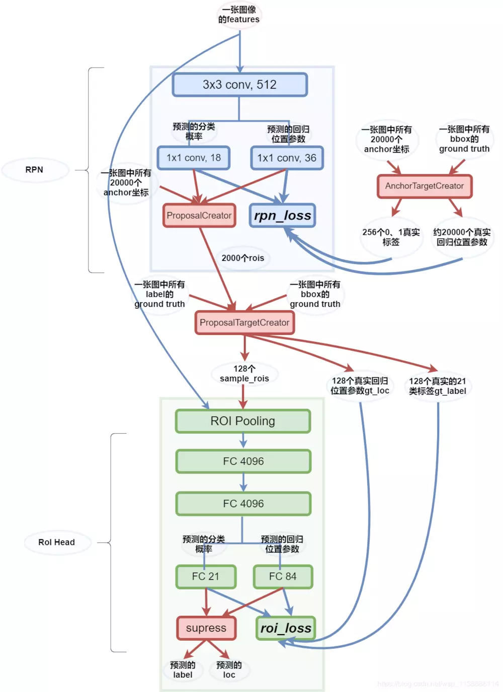

Faster R-CNN最突出的贡献就在于提出了Region Proposal Network（RPN）代替了Selective Search，从而将候选区域提取的时间开销几乎降为0（2s -> 0.01s）
结构梳理
一切都要从一张图的特征开始说起：features。 
RPN 接到features后，先做了一次3x3的卷积，再由两个1x1卷积操作分别得到分类score:2x9与位置偏移loc:4x9结构，这两个结构都会被ProposalCreator与rpn_loss所使用。
AnchorTargetCreator 用box与anchor联合得到拟合目标：loc与label。这里前景与背景的label总数为256，loc图外的标记为-1。
RPN_LOSS 将会利用上述预测信息与标签信息计算loss，以此来调整使得RPN网络预测的score与loc更好。只对前景计算回归损失。
ProposalCreator 的任务是拿到score与loc后，将loc转为roi，按照分数筛选先取12000，再通过极大值抑制去除重叠后再按照score选取前2000个roi。
ProposalTargetCreator 将ProposalCreator中得到的2000个roi与标签box利用ROU再进行筛选，留下正负样本共128个。
ROI Pooling 层得到这128个rois后，对其坐标对应到特征图，size缩小为1/stride（1/16）。这里在对应的时候，会存在无法整除的现象，所以后来又提出了ROI Align。对应好之后，还要对roi 实施Pooling操作，使得对应好的roi特征图池化到后面层能处理的大小（7x7），在这里还是有量化损失。
FC 21与FC 84 分别得到20+1（背景）类的分类与目标的位置。得到的数据将会与ProposalTargetCreator 中的真实标签计算roi_loss 。
名词解释： roi = [y_min,x_min,y_max,x_max]，实际原图坐标。 loc = [dy, dx, dh, dw]各个位置的偏移。
关于box的回归讲解：
\(t_*\) 包含真实框与预测框的平移量(\(t_x,t_y\) )和尺度缩放(\(t_w,t_h\) ) \[
\begin{array}{c}{t_{x}=\left(G_{x}-P_{x}\right) / P_{w},(6)} \\ {t_{y}=\left(G_{y}-P_{y}\right) / P_{h},(7)} \\ {t_{w}=\log \left(G_{w} / P_{w}\right),(8)} \\ {t_{h}=\log \left(G_{h} / P_{h}\right),(9)}\end{array}
\] 目标函数为： \[
d_{*}(P)=w_{*}^{T}\Phi_{5}(P)
\] 其中\(\Phi_{5}(P)\) 是输入Proposal的特征向量，\(w_*\) 是要学习的参数( * 表示x,y,w,h)， \(d_{*}(P)\) 是得到的预测值。 计算目的是让\(t_*\) 与\(d_*(P)\) 之间的差距最小，得损失函数为： \[
Loss=\sum_{i}^{N}(t_{*}^{i}-\hat{w}_{*}^{T}\phi_{5}(P^{i}))^{2}
\]
函数优化目标： \[W_{*}=\operatorname{argmin}_{w_{*}}\sum_{i}^{N}\left(t_{*}^{i}-\hat{w}_{*}^{T}\phi_{5}\left(P^{i}\right)\right)^{2}+\lambda\left\|\hat{w}_{*}\right\|^{2}\]
为什么\(t_x,t_y\) 要除以宽高： 因为，特征图具有尺度不变性，无论之前图像的大小，最终形成的特征图的都是一样的，所以移动的比例都是一样的，所以要除以宽高。
为什么\(t_w,t_h\) 要取对数： 因为缩放尺度必须是正数，刚好exp函数满足要求，反函数即为log。
线性函数拟合非线性函数： 特征图与参数的运算是线性运算，而对数运算是非线性运算，这是很显然无法拟合的。但是，在IOU较大的时候对数运算可以近似为线性运算。 高数中的基本公式：\(\lim _{x=0} \log (1+x)=x\) 所以可以得到： \[t_{w}=\log \left(G_{w} / P_{w}\right)=\log \left(\frac{G_{w}+P_{w}-P_{w}}{P_{w}}\right)=\log \left(1+\frac{G_{w}-P_{w}}{P_{w} }\right)\] 可以看到，当\(G_w-P_w=0\) 的时候，才会是线性函数，也就是预测值与真实值要足够近，只有满足该条件才可以很好的回归Box，否则，就算FasterRcnn有两次回归运算都无法处理一些相差很大的box,更别说其它one stage算法。为了处理这类问题，一般需要统计数据中的边框类型，设置合适的Anchor长宽比与大小。除此之外，用Cascade RCNN提高前景roi的质量也是一种方法。
IOU:两个框的交并比
1 2 3 4 5 6 7 8 9 10 11 12 13 14 15 16 17 18 19 20 21 22 23 24 25 26 27 28 29 30 31 32 33 import numpy as np def compute_iou(box1, box2, wh=False): """ compute the iou of two boxes. Args: box1, box2: [xmin, ymin, xmax, ymax] (wh=False) or [xcenter, ycenter, w, h] (wh=True) wh: the format of coordinate. Return: iou: iou of box1 and box2. """ if wh == False: xmin1, ymin1, xmax1, ymax1 = box1 xmin2, ymin2, xmax2, ymax2 = box2 else: xmin1, ymin1 = int(box1[0]-box1[2]/2.0), int(box1[1]-box1[3]/2.0) xmax1, ymax1 = int(box1[0]+box1[2]/2.0), int(box1[1]+box1[3]/2.0) xmin2, ymin2 = int(box2[0]-box2[2]/2.0), int(box2[1]-box2[3]/2.0) xmax2, ymax2 = int(box2[0]+box2[2]/2.0), int(box2[1]+box2[3]/2.0) ## 获取矩形框交集对应的左上角和右下角的坐标（intersection） xx1 = np.max([xmin1, xmin2]) yy1 = np.max([ymin1, ymin2]) xx2 = np.min([xmax1, xmax2]) yy2 = np.min([ymax1, ymax2]) ## 计算两个矩形框面积 area1 = (xmax1-xmin1) * (ymax1-ymin1) area2 = (xmax2-xmin2) * (ymax2-ymin2) inter_area = (np.max([0, xx2-xx1])) * (np.max([0, yy2-yy1])) #计算交集面积 iou = inter_area / (area1+area2-inter_area+1e-6) ＃计算交并比 return iou
NMS
1 2 3 4 5 for object in all objects: (1) 获取当前目标类别下所有bbx的信息 (2) 将bbx按照confidence从高到低排序,并记录当前confidence最大的bbx (3) 计算最大confidence对应的bbx与剩下所有的bbx的IOU,移除所有大于IOU阈值的bbx (4) 对剩下的bbx，循环执行(2)和(3)直到所有的bbx均满足要求（即不能再移除bbx）
NMS是对所有的类别分别执行的。举个栗子，假设最后预测出的矩形框有2类（分别为cup, pen）,在NMS之前，每个类别可能都会有不只一个bbx被预测出来，这个时候我们需要对这两个类别分别执行一次NMS过程。
1 2 3 4 5 6 7 8 9 10 11 12 13 14 15 16 17 18 19 20 21 22 23 24 25 26 27 28 29 30 31 32 33 34 35 36 37 38 39 40 41 42 43 44 45 import numpy as np class Bounding_box: def __init__(self, x1, y1, x2, y2, score): self.x1 = x1 self.y1 = y1 self.x2 = x2 self.y2 = y2 self.score = score def get_iou(boxa, boxb): max_x = max(boxa.x1, boxb.x1) max_y = max(boxa.y1, boxb.y1) min_x = min(boxa.x2, boxb.x2) min_y = min(boxa.y2, boxb.y2) if min_x <= max_x or min_y <= max_y: return 0 area_i = (min_x - max_x) * (min_y - max_y) area_a = (boxa.x2 - boxa.x1) * (boxa.y2 - boxa.y1) area_b = (boxb.x2 - boxb.x1) * (boxb.y2 - boxb.y1) area_u = area_a + area_b - area_i return float(area_i) / float(area_u) def NMS(box_lists, k): box_lists = sorted(box_lists, key=lambda x: x.score, reverse=True) NMS_lists = [box_lists[0]] temp_lists = [] for i in range(k): for j in range(1, len(box_lists)): iou = get_iou(NMS_lists[i], box_lists[j]) if iou < 0.7: temp_lists.append(box_lists[j]) if len(temp_lists) == 0: return NMS_lists box_lists = temp_lists temp_lists = [] NMS_lists.append(box_lists[0]) return NMS_lists box1 = Bounding_box(13, 22, 268, 367, 0.124648176) box2 = Bounding_box(18, 27, 294, 400, 0.35818103) box3 = Bounding_box(234, 123, 466, 678, 0.13638769) box_lists = [box1, box2, box3] NMS_list = NMS(box_lists, 2) print (NMS_list) print (NMS_list[0].x1)